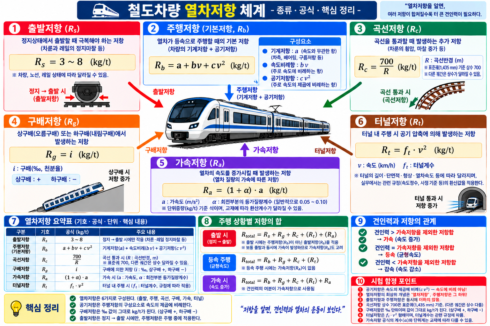

GATE5 · PART 12 · UNIT 12-01
열차의 주행저항 3종
곡선저항 · 구배저항 · 공기저항 — 개념·특성·기출계산
★★★ A등급
SOURCE: 4.html 개념49
§1 열차의 주행저항 3종 (SOURCE: 4.html 개념49)
4.html 개념49 (p8-35)
주행저항 체계 — 곡선·구배·공기저항
열차가 주행 중에 지속적으로 받는 저항은 3종이다. 본 UNIT에서는 곡선·구배·공기 3종을 중심으로 다룬다.
| 저항 종류 | 계산식 | 특징 |
|---|---|---|
| ① 곡선저항 | R = 700/r (kg/t) r: 곡선반경(m) | 반경 작을수록 저항 증가 |
| ② 구배저항 | R = W × i (kg) W: 중량(t), i: 기울기(‰) | 상구배 = 저항, 하구배 = 가속력 |
| ③ 공기저항 | 속도²에 비례 | 고속일수록 지배적, 전체 주행저항의 대부분 |
| 출발저항 (참고) | 정지 → 기동 시 추가 저항 | 기동 직후만 발생, 주행 중 소멸 |
✅ 주행저항 3종 암기: 곡·구·공 = 곡선저항 / 구배저항 / 공기저항
§2 공기저항 특성 (SOURCE: 4.html 개념49)
4.html 개념49 · engineering id:62
공기저항 — 속도²에 비례
★★★
| 항목 | 내용 |
|---|---|
| 비례 관계 | 속도의 제곱(v²)에 비례하여 증가 |
| 고속에서의 비율 | 고속철도에서 전체 주행저항의 대부분을 차지 |
| 저감 방법 | 유선형 차체 설계로 공기저항 감소 |
⚠️ 함정: 공기저항은 속도에 비례 → ❌
정답: 공기저항은 속도의 제곱(v²)에 비례
정답: 공기저항은 속도의 제곱(v²)에 비례
§3 곡선저항 공식 (SOURCE: 4.html 개념49)
4.html 개념49 · engineering id:56
곡선저항 R = 700/r
★★★
R = 700/r (kg/t)
R: 곡선저항(kg/t) · r: 곡선반경(m)
| 특성 | 내용 |
|---|---|
| 반비례 관계 | 곡선반경(r)이 작을수록 저항 증가 |
| 직선 구간 | 곡선저항 = 0 (직선에는 곡선저항 없음) |
| 단위 | kg/t (열차 1t당 kg) |
⚠️ 함정: "곡선저항은 반경에 비례" → ❌
정답: 곡선저항은 반경에 반비례 (반경 클수록 저항 작음)
정답: 곡선저항은 반경에 반비례 (반경 클수록 저항 작음)

곡선·구배·공기저항 합산 구조

주행저항 3종 체계
§4 기출문제
Q1
engineering id:62 · SOURCE: 4.html 개념49 · 공기저항
열차 주행 시 발생하는 저항 중 속도의 제곱에 비례하여 고속에서 지배적인 저항은?
- 구배저항
- 곡선저항
- 공기저항
- 출발저항
✅ 정답: ③ 공기저항
해설: 공기저항은 속도²에 비례. 고속철도에서 주행저항의 대부분을 차지. 유선형 차체로 감소.
⚠️ 오답함정: "속도에 비례" → 제곱에 비례
해설: 공기저항은 속도²에 비례. 고속철도에서 주행저항의 대부분을 차지. 유선형 차체로 감소.
⚠️ 오답함정: "속도에 비례" → 제곱에 비례
Q2
engineering id:56 · SOURCE: 4.html 개념49 · 곡선저항 계산
곡선반경 350m인 구간에서의 곡선저항은? (단, 곡선저항 공식: R=700/r kg/t)
- 1 kg/t
- 2 kg/t
- 3 kg/t
- 4 kg/t
✅ 정답: ② 2 kg/t
계산: R = 700/350 = 2 kg/t. 반경이 작을수록 저항 증가. 직선 구간 = 0.
⚠️ 오답함정: "700×350"으로 곱셈하는 오답
계산: R = 700/350 = 2 kg/t. 반경이 작을수록 저항 증가. 직선 구간 = 0.
⚠️ 오답함정: "700×350"으로 곱셈하는 오답